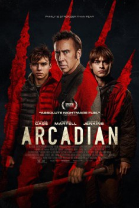

Arcadian (2024)


Beware Of The Dark

Also known as:Depois do Apocalipse
Country:United States, 92 minutes
Spoken languages:English
Genres:Action, Drama, Horror, Sci-Fi, Thriller
Director(s):Benjamin Brewer
Writer(s):Mike Nilon
Video Codec:Unknown
Number: 3884
Tomatometer:

77%

56%
IMDb Rating:


5.5/10 (16.9K votes)
Certification:12
Storyline:
A father and his twin teenage sons fight to survive in a remote farmhouse at the end of the world.
Cast:
Nicolas Cage (as Paul), Jaeden Martell (as Joseph), Maxwell Jenkins (as Thomas), Sadie Soverall (as Charlotte), Samantha Coughlan (as Mrs. Rose), Joe Dixon (as Mr. Rose), Joel Gillman (as Hobson), Daire McMahon (as Militant Farmer (uncredited))
Medium: Digital Copy,
Location: D4
Loaned: No
Aspect ratio: Unknown